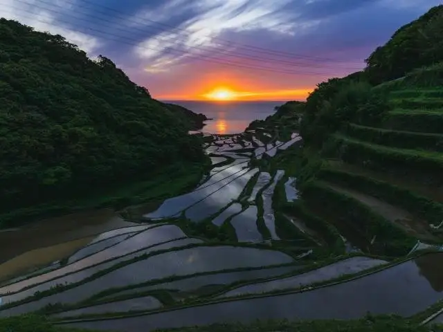
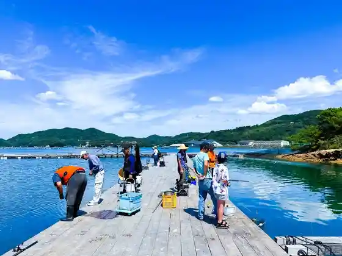

Genkai
Genkai · Saga
Genkai
Highlighted on the Saga map.

Sights
Kariya Wan Yugyo Center

Genkai Jisedai Enerugii Park (Asupia)
Hamanora no Tanada
Genkai Enerugii Park
Genkai Kaijo Onsen Parea
Matsumoto Aisu Workshop
Yashima Farm / Mujin Hambaiten Ho Tomato Ya Tsunemon
Genkai Town Hall